Electrical Example of an Exponential Decay Process with Resistors & Capacitors (RC Circuits)#
Background#
● Background Overview#
NOTE REGARDING THE HOMEWORK Spring 2026
The numerical question in this week’s homework does not like scientific notation. Still round your answer to the stated sig. figs., but write out the whole number (e.g. write 1.23E5 as 123,000)
OVERALL GOALS
Use resistors and capacitors to investigate:
what a capacitor is
the relationship between capacitance and resistance
the discharging nature of capacitors
Many physical processes involve a rate of change that is proportional to the magnitude of the quantity itself; the result is an in exponential behavior over time. In this experiment, you will investigate the exponential relaxation (decay) of the voltage or charge on a capacitor.
An electrical analogy of this process is a simple circuit where a capacitor discharges through a resistor connected across its terminals. The schematic for this RC circuit is shown in Fig. 103-right.
{kind=link}
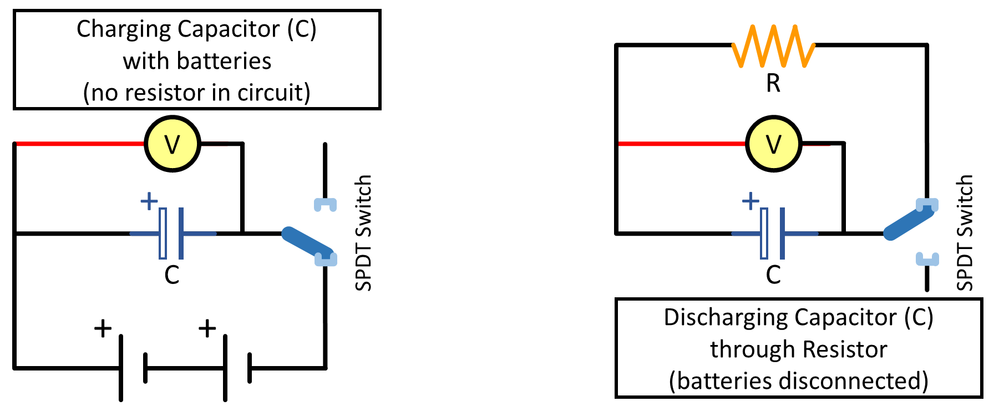
Fig. 103 Left) Schematic of circuit charging the capacitor. Right) Schematic of RC circuit disconnected from the battery and discharging through the resistor.#
With the switch connecting the capacitor to the batteries (see Fig. 103-left), the capacitor rapidly charges up to the potential of the batteries. Since a capacitor will not pass a DC current, a positive charge builds up on one of the plates while a negative charge forms on the other. When the switch is flipped to connect the capacitor to the resistor, we have the circuit (shown in Fig. 103-right) containing a charged capacitor with a resistance across its terminals.
● Time Dependence of Voltage in a Resistor-Capacitor (RC) Circuit#
We will now investigate how the voltage across the capacitor changes with time, starting at \(t = 0\) when the capacitor is fully charged. The voltage will be measured by the voltmeter \(V\) connected as shown in Fig. 103. As time progresses, current will flow from the positively charged plate of the capacitor through the resistance \(R\) to the negatively charged plate.
Since a voltage exists across the capacitor, there must also be a voltage across \(R\). This implies an electric current, and from Ohm’s Law:
Since current is a flow of charge, \(Q\), and since the two sides of the capacitor are isolated from each other, the charge which flows through the resistor must originate on one of the plates and terminate on the other. Thus the flow of current reduces the charge on the capacitor. In a time, \(t\), the amount of charge that passes through the resistor is \(I \times t\). This must be \(-Q\) (the negative change in the charge on the capacitor) which leads to the relation:
The value of the resistance limits the amount of current that can flow and thus limits the rate of discharge of the capacitor.
From the definition of a capacitor, we know that the larger the voltage applied to the capacitor, the more charge it will put on the capacitor. Hence, if \(V\) is the voltage across the capacitor, then \(Q\) is proportional to \(V\). The larger the plate area, the more charge it should hold. In addition, if the plates are brought closer together, the positive plate will attract more negative charge from the battery to the negative plate. All these factors have to do with the geometry and construction details of the device. Thus, the bigger the plate area and the smaller the plate spacing, the larger the charge that accumulates in the capacitor for a given voltage. Hence we can write:
where \(C\) is a constant for a given capacitor called its capacitance.
Combining these three equations, we obtain:
Notice that the rate of change of the charge at any time is directly proportional to the amount of charge on the capacitor at that time. (This is similar to the amount of radiation given off by a quantity of decaying atoms.) By writing (126) in the form:
both sides of the equation can be integrated to obtain:
After some simplification, the solution to this differential equation is:
At \(t=0\), \(V = V_{0}\), so that \(Q = CV_{0}\) for \(t = 0\). Thus the behavior of \(Q\) or \(V\) is the same after the switch is opened:
The behavior of the current \(I\) is found directly from this:
The product \(RC\) has the units of time (Ω × F); we can verify this by using dimensional analysis:
This product is called the time constant of the circuit. In a time equal to \(RC\), the voltage, \(V\), drops to a fraction:
This means that in any interval of time equal to \(RC\), the voltage has decreased to 36.8% of the initial value. In determining \(RC\), it is often more convenient to measure the time for the voltage to drop to \(\frac{1}{2}\) of its initial value and from this to compute \(RC\). The “half-life” \(t_{1/2}\) is given by:
Taking the natural logarithm of both sides and simplifying we obtain:
or
Note that by taking the natural log of the expression for the voltage, (127), we obtain:
in the form of \(y=mx+b\),
If we plot the value of the natural log of \(V\) as a function of time, \(t\), we obtain a straight line whose slope is \(-1/RC\) with an intercept of \(\ln V_{0}\). From this slope, we can obtain a measured value for the product \(RC\) which is the time constant, i.e. the time it takes the voltage (or charge) to decay to \(1/e\) of its original value (see (128)).
● Dividing Charge across Capacitors in a Capacitor-Capacitor (CC) Circuit#
A capacitor \(C\) at voltage \(V\) holds a charge \(Q = CV\). In the circuit shown in Fig. 104 when the single-pole-double-throw (SPDT) switch connects the first capacitor (\(C_\text{first-position}\)) to the voltage source, it holds a charge \(Q_\text{first-position} = C_\text{first-position} V_\text{source}\). The switch is then flipped to disconnect the first capacitor from the battery and connect it to the second capacitor (\(C_\text{second-position}\)). Charge moves from the first-position capacitor to the second-position capacitor, lowering the voltage and sharing the charge. Assuming the second capacitor is initially uncharged, the total charge is unchanged. The total charge \(Q\) must then be divided between the two capacitors so that they come to the same lower final voltage:
Because the two capacitors are at the same voltage, the total charge is divided between them in proportion to their capacitance.
{kind=link}
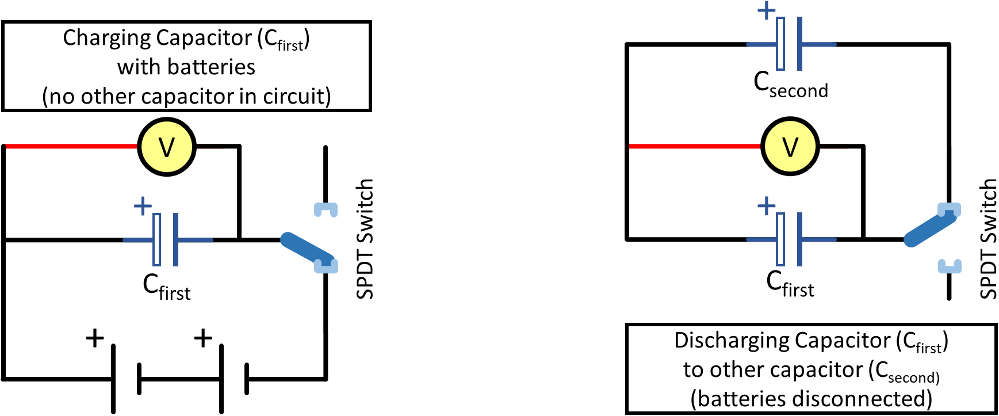
Fig. 104 Left) Schematic of circuit charging the capacitor. Right) Schematic of CC circuit disconnected from the battery and discharging to a separate capacitor.#
● Equipment#
The general setup with electrical schematic can be seen in Fig. 105, with the voltmeter attached on either side of the capacitor section of the circuit. Capacitors to be experimentally determined, resistors to be treated as known constants, and wire and jumper bars are shown in Fig. 106.
Category |
Items |
|---|---|
Resistors |
• 2× ceramic/metal-film resistors: \(R_{1\text{,brown}}\), \(R_{2\text{,blue}}\) |
Capacitors |
• 2× capacitors: \(C_{1\text{,big}}\), \(C_{2\text{,small}}\) |
PASCO Modular Circuit Kit |
• 4× corner modules |
Measurement Device (“actual”) |
• Fluke multimeter with alligator clips (for “actual” values) |
Experimental Voltage Measurement |
• Capstone voltmeter (Connected across capacitors using alligator clips on jumper bars) |

Fig. 105 Left) Schematic, with circuit modules with spring modules for connecting capacitors, resistors, jumper bars. Right) Example of actual setup with voltmeter (used in Capstone) is connected across the eventual locations of the capacitor(s).#
{kind=link}
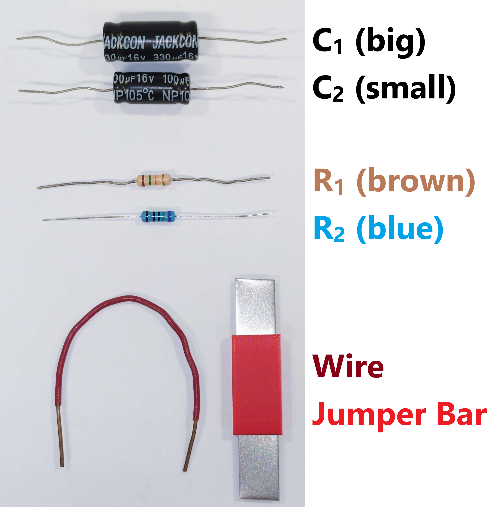
Fig. 106 Example of capacitors, resistors, and wire and jumper bar to be used.#
Demo Video: Setup & Procedure#
Some clarifications, additions, or corrections since this video is slightly outdated:
For Experiment 1 (RC Circuit)
\(V_\text{final}\) used to be called \(V_\text{half-time}\), but was changed to \(V_\text{final}\) for clarity
Just using standard deviation for our uncertainty range today.
For Experiment 2 (CC Circuit)
Just run 1st and 2nd parts as written in the procedure:
\(C_\text{small}\) in battery circuit (bottom position) to discharge to \(C_\text{big}\) in top position
Old 3rd and 4th parts with the capacitors swapped are left for Post-Lab questions
Ignore callouts to whiteboard or specific figure or equation numbers as they have changed.
If embedding is broken, follow: https://www.youtube.com/watch?v=qIOAo6_dHeY
Experimental Procedure#
● Procedure Preview#
OVERVIEW
Conduct two experiments:
EXPERIMENT I — Discharging capacitor(s) through resistor (RC Circuit)
Experimentally determine the capacitance of capacitors by:
Measuring voltage over time
Analyze the data using two analysis methods:
HALF-LIFE \(t_{1/2}\), where half-life is the time for an initial quantity to exponentially decay to half its initial value and is related to the time constanct and natural log of 2 (a.k.a. LN(2))
LINEAR-FIT with LN(V) vs. Time plot (a linearized version of exponential decay plot)
EXPERIMENT II — Dividing charge across two capacitors (CC Circuit)
Compare how initial and final voltages change, and how final voltages (after charge is distributed) compare to our expected values by:
Measuring voltage over time.
Using small capacitor to share charge with a larger capacitor for two cases:
Without wire — Repeatedly discharging a small capacitor (charged in the battery circuit) to a large capacitor in the top circuit position (no-battery circuit)
With wire — Use a wire to discharge the large capacitor in the top circuit position between trials
● EXPERIMENT I — Discharging Capacitor through Reistor (RC Circuit)#
We study resistor-capacitor circuits and how capacitors discharge. Some ideas to think about as you go about this experiment is: How do different RC (resistor-capacitor) combinations affect the change of their circuits’ voltages over time? How do the two analysis methods (half-life and linear-fit) compare? How well does your average value of capacitance \(\pm\sigma\) agree with your “actual” (a.k.a. expected) values?
You will have two resistors (treated as constants) and two capacitors (all shown in Fig. 106). From those, you will have five RC combination cases (shown in Table 14). The capacitor values will be determined by analyzing how the voltage across the capacitors change over time and analyzed with two different analysis methods.
Case |
Resistor |
Capacitor Configuration |
|---|---|---|
1 |
\(R_1\) (brown) |
\(C_1\) (BIG) |
2 |
\(R_2\) (blue) |
\(C_1\) (BIG) |
3 |
\(R_1\) (brown) |
\(C_2\) (small) |
4 |
\(R_1\) (brown) |
\((C_1+C_2)_{\text{parallel}}\) |
5 |
\(R_1\) (brown) |
\((C_1+C_2)_{\text{series}}\) |
○ Exp. I — Preliminary Setup#
Create a common data table for:
\(R_1\): Resistor 1 (brown)
\(R_2\): Resistor 2 (blue)
\(C_1\): Capacitor 1 (BIGGER)
\(C_2\): Capacitor 2 (smaller)
\((C_1+C_2)_{\text{parallel}}\): Capacitors in parallel (reminder of parallel vs. series in Fig. 108)
\((C_1+C_2)_{\text{series}}\): Capacitors in series
Measure and record:
“actual” resistance values with the Fluke multimeter set to measure resistance (Ω or , check units/range)
“actual” capacitance values of your capacitors (both single and in parallel and series) for comparisons to experimental data later; use the Fluke multimeter set to measure farads (use the yellow alternate function of the ohmmeter, , check units/range).
Multimeter Measurement Tips
Use can use the alligator clips directly connected to the wire leads, or like the previous lab, measure when they are in the spring circuit modules.
Ensure the resistors or capacitors are completely isolated from any other circuit element (especially important if using spring circuit modeules)
You can set aside the Fluke multimeter, as the rest of your data will come from Capstone.
Prepare Capstone:
If not already connected, connect the voltmeter wires to the PASCO 850 Universal Interface via the Analog Input (Channel A) and on either side of where the capacitors will be inserted into the circuit’s spring modules (see Fig. 105-right). Red/positive lead must be on the left, black/negative lead must be on the right due to polarity.
Open the Capstone file on the desktop for today. After it loads, and you confirm in the Hardware Setup side panel that the voltage sensor is configured/active (no warning triangles, otherwise double check the 850 interface is powered on).
Graphs/Data — They should be already set up.
Top graph should be Voltage versus Time
Bottom graph should be Natural Log(V) vs. Time
Data table should show voltages and times (this table is connected to the V vs. T plot, so if you highlight data points on the plot, they’ll be highlighted in the table)
Zero the voltage sensor and check sampling rate:
DO NOT ADD RESISTORS OR CAPACITORS TO THE CIRCUIT YET
Open the circuit by opening the single-pole-double-throw (SPDT) switch to ensure batteries are disconnected
In the recording bar, with the voltage sensor selected, ,
Set sample rate to 2500 samples per second
Press record and view V vs. T (top graph)
Click the zero button (zero with two yellow arrows pointing towards each other). Ensure voltage on V vs. T plot shows \(0\text{V}\).
On Voltage Calibration
It is possible the voltage sensor loses calibration later in the lab. If it appears to be happening, return here zero the voltage sensor again. Common signs are when there is a non-zero voltage being plotted when the circuit is open (SPDT switch not connected to either branch of the circuit), or if the LN(V) vs. Time plot (linearized of exponential) is clearly not linear (breaks down when you take the LN(\(<0\)).)
○ Exp. I — Data Acquisition#
Starting with the first case, connect the resistor, capacitor(s), switch, batteries, voltmeter as shown in Fig. 107. Also see Fig. 108 for the cases involving capacitors in parallel and series.
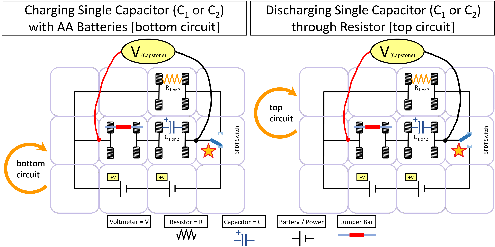
Fig. 107 Modular electronic RC circuit. The resistors and capacitors will just be placed in the spring modules to become part of the circuits. Left) Example with lower capacitor being charged by batteries in the bottom circuit. STAR Denotes switch position down. Right) Example with lower capacitor discharging through the resistor in the top circuit. STAR Denotes switch position up.#
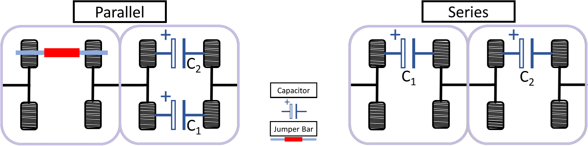
Fig. 108 Left) Parallel capacitors and Right) Series capacitors in spring modules.#
Create a data table with TWO MAIN SECTIONS (half-life analysis method, linear-fit analysis method) for the first resistor and capacitor case (once you have this all set up, you’ll then be able to just copy and paste this data table for the other RC combinations):
With five columns (one for each of the 5 decay trials, the act of discharging a capacitor through resistor) — trials are suggested to go horizontal on the spreadsheet today due to the many variables we will use within each case. Also include columns for the average values and for the standard deviation (\(\sigma\)) as needed. NOTE: For today, this \(\sigma\) is effectively an overestimation of your \(\pm\) uncertainty range around the average.
Include a section for the Half-Life analysis method (\(t_{1/2})\):
\(V_{\text{init}}\): Initial voltage, right after decay starts
\(V_{\text{final}}\): Final voltage, voltage that is half the value of the initial voltage, \(V_{\text{init}}/2\)
\(t_{\text{init}}\): Initial time, when \(V=V_{\text{init}}\). Found either with the multi-coordinates tool in the Capstone graphs, or in the Capstone data table.
\(t_{\text{final}}\): Final time, when \(V=V_{\text{final}}\). Found in a similar way in Capstone, just when voltage reaches half of its initial voltage.
\(t_{1/2}\): Half-life, the duration it takes for initial quantity to halve (\(t_{\text{final}}-t_{\text{init}}\), characteristic of an exponential decay)
\(C_{\text{half-life-method}}\): Capacitance as determined by the rearrangement of (130)
Include another section for the linear-fit analysis method (LN(V) vs. Time):
Experimental slope: from the linear fit of the natural log(V) vs. time plot (linearizing the exponential decay) in Capstone where the fit will be in the form \(y=mt + b\)
\(RC\): Decay time constant of the exponential decay as determined from the slope
\(C_{\text{linear-fit-method}}\): Capacitance as determined from the decay time constant found with the LN(V) vs. T plot
DATA TAKING:
Start recording in Capstone. Confirm, with the SPDT switch not connected to either circuit and the capacitor discharged (use the red wire to connect either side of the capacitor to rapidly discharge it), that the voltage sensor is reading zero volts — if not, double check the zeroeing procedure earlier.
Conduct 5 decay trials (can be done in the same Capstone recording):
Flip the SPDT switch DOWN to connect the batteries to the capacitor (Fig. 107-left) and observe the voltage plot as the capacitor rapidly charges to \(V_\text{init}\) (should be near \(3\,\text{V}\) as can be seen in the top plots of Fig. 109).
Once the capacitor is fully charged, flip the switch UP to connect the capacitor to the resistor (Fig. 107-right); observe the decay of the voltage across the capacitor. In essence, the battery has been eliminated from the circuit and the capacitor is now acting as the voltage source.
Wait until the voltage drops to less than \(10\%~\text{of}\,V_\text{init}\) (e.g. if \(V_\text{init}=3.0\,\text{V}\), then \(V_\text{10-percent}= 0.3\,\text{V}\) as can be seen in the top plots of Fig. 109).
Repeat four more times for a total of 5 decay trials within this single Capstone recording. You will analyze this whole data set in the following methods.
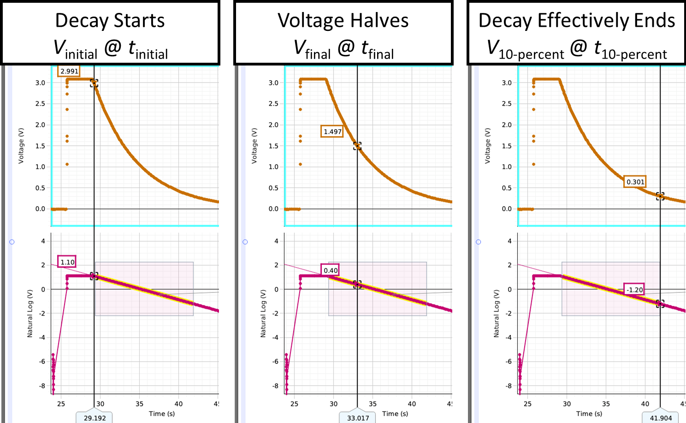
Fig. 109 Example Voltage vs. Time plot (top) and LN(V) vs. Time plot (bottom). Left) Time of start of a decay trial. Center) Time when half of the initial voltage is reached (i.e. after a half-life or \(t_1/2\)). Right) Time of the effective end of a decay trial when voltage drops to 10% of initial voltage (i.e. when \(V = V_\text{10-percent}\).)#
{kind=link}
{kind=link}
{kind=link}
○ Exp. I — Data Analysis#
HALF-LIFE Analysis:
Determine the half-life, and from that determine the capacitance for each decay trial of the current case. Example of relevant locations are shown in Fig. 109.
Multi-coordinates Tool and Plot Viewing Tips
Examine the exponential decay plot (V vs. T) by zooming in/out on the X and Y axes to view the relevant decay trial. Enable the multi-coordinates tool and drag the line right or left to the data points right as the voltage begins to decay. The multi-coordinates tool will display both time on the X-axis and Voltage next to the data.
If needed, use to rescale the axes to show all (or the highlighted) data.
Find the initial voltage \(V_\text{init}\) and time \(t_\text{init}\) when your capacitor just starts to discharge (just after start of the decay, e.g. Fig. 109-left). NOT when the capacitor is still connected to the battery.
Divide your initial voltage by 2 to calculate the final voltage \(V_\text{final}\) (i.e. when your quanity has decayed to half of its initial value)
Find and record the final time \(t_\text{final}\) for when your data reaches that final voltage (e.g. Fig. 109-center).
Determine half-life from the time difference \(t_{1/2}= t_\text{final}-t_\text{init}\).
From this and (130), determine your experimental capacitance, calculate the average capacitance and standard deviation of capacitance from the five trials.
Linear-fit Analysis:
In the Capstone plot of LN(Voltage) vs. Time, we have effectively linearized the exponential function.
Highlight the data of the linear portion of the decay curve with the highlighter tool . The linear section covers the time it took voltage to decay from 100% to 10% of the initial voltage (i.e. go from \(V_\text{init}\) to \(V_\text{10-percent}\)). You can use the multi-coordinates tool you used in the previous method to help you determine the temporal range (see example in Fig. 110). If the fit does not display for the selected data, check the Curve Fit tool is enabled.
Increase the fit’s coefficient sig. figs. to 4. (for reminder, see Fig. 11).
Record the slope — What does the slope represent; where did it come from? The natural log of the exponential function gives us a linear relationship between LN(Voltage) and Time, as described in (131). When plotted in Capstone, it should be in the form \(y=mt + b\).
Determine the time constant \(RC\), the capacitance \(C_\text{linear-fit-method}\) from that time constant, and calculate the average capacitance and standard deviation of capacitance from the five trials. What does the \(RC\) represent?
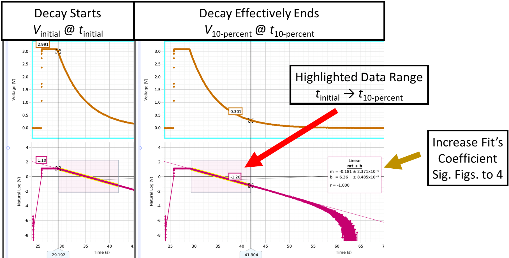
Fig. 110 Example Voltage vs. Time plot (top) and LN(V) vs. Time plot (bottom). Left) Time of start of a decay trial. Lower bound of data-highlight box for fitting data in LN(V) vs. Time plot. Right) Time of the effective end of a decay trial when voltage drops to 10% of initial voltage (i.e. when \(V = V_\text{10-percent}\) and upper bound of data-highlight box.)#
PLOTS — Take a screenshot or photo of one trial for each of your five cases of your \(V\) vs. \(T\) and LN(V) vs. T plots in Capstone. You should have 5 total sets of plots from the 5 cases. See example in Fig. 110-right.
Capstone Plots for Spreadsheet
You should include a representative plot from each case in your finalized spreadsheet submission.
Ensure the important information of the plots are visible. Consider the axes are visible and zoomed in to just one trial for the current case. Remember: when making a plot in Excel, what should you normally include?
{kind=link}
For each case, compare your values for capacitance to the “actual” capacitance values of the capacitors, \(C_1\), \(C_2\), \((C_1+C_2)_\text{parallel}\), and \((C_1+C_2)_\text{series}\) you measured with the multimeter in ○ Exp. I — Preliminary Setup.
Comparisons
How well does your average value of capacitance +/- standard deviation agree with your expected values? Why or why not? What are possible sources of uncertainty or systematic bias that could cause your values to agree/not agree with your expected values that you had found with the multimeter? If there’s time, retake any necessary data and update your recorded values.
Replace the resistor and/or capacitor for the next combination case and repeat the procedure (from ○ Exp. I — Data Acquisition) above for each of the other cases listed in Table 14. Think about: How do different RC (resistor-capacitor) combinations affect the change of their circuits’ voltages over time (i.e. decay)?
● EXPERIMENT II — Dividing Charge across Two Capacitors (CC Circuit)#
Experiment II Preview
We study dividing charge across two capacitors, as in circuit diagram Fig. 104 and schematic Fig. 111.
{kind=link}
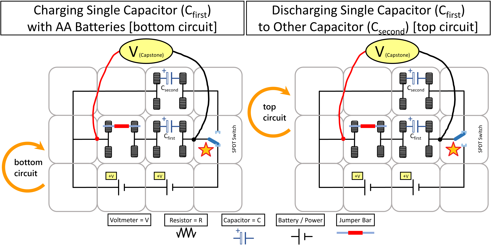
Fig. 111 Modular electronic circuit with two capacitors. Left) Example with lower capacitor being charged by batteries in the bottom circuit. STAR Denotes switch position down. Right) Example with lower capacitor discharging to the upper capacitor in the top circuit. STAR Denotes switch position up.#
○ Exp. II — Preliminary Setup#
Consider \(C_{1}\) as high-capacitance and \(C_{2}\) as low-capacitance capacitors as you likely had done in the first experiment.
Construct the circuit shown in Fig. 111 by putting the lower-capacitance \(C_2\) in the
firstposition (bottom circuit when charged-by-batteries) and then replacing the resistor with the higher-capacitance \(C_1\) in thesecondposition (top circuit when charged by the first capactior). Ensure the voltmeter is still connected as before (either side of thefirstposition) and continue using the same Voltage vs. Time plot in Capstone.Create a data table including:
Your experimentally-determined average capacitance values for \(C_1\) and \(C_2\) (remember to use Excel referencing)
Also include an area for the expected final voltage
Include three columns for initial and final voltages as well as the difference between the two. Create five rows for five trials.
Note: Initial voltage is \(V\) when the battery is connected to \(C_\text{first}\) before you throw the switch to connect the capacitors together. Final voltage is \(V\) after you throw the switch to connect \(C_\text{first}\) with \(C_\text{second}\) and allow the charge in the
firstcapacitor to be distributed between the two capacitors.
Temporarily connect the red wire across each capacitor to discharge them before flipping the switch (i.e. ensure the capacitors start with no charge stored and both circuits are open).
○ Exp. II — Data Acquisition & Analysis#
Connect \(C_\text{first}\) to the battery using the single-pole-double-throw (SPDT) switch.
Flip the SPDT switch to disconnect \(C_\text{first}\) from the battery and connect it to \(C_\text{second}\). Flip the switch back and forth quickly for a total of five trials.
From the \(V\) vs. \(T\) plot, record for each of the trials the initial voltage before charge is distributed and final voltage after the charge is distributed between the capacitors (notice the near immediate change). Examples are shown in Fig. 112.
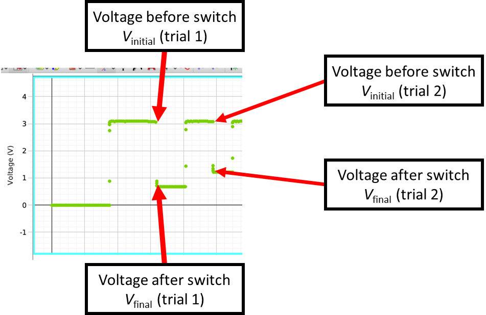
Fig. 112 Example Voltage vs. Time plot for experiment two.#
PLOTS: Experiment II - Plot 1 — Take a screenshot or photo that includes all five trais in one image of your \(V\) vs. \(T\) plot in Capstone.
Calculate your expected final voltage using your initial voltage and the experimental \(C_1\) and \(C_2\) values with (132).
Calculate the difference in voltage for each trial. Notice how the final voltage is drifting up towards the initial voltage and the difference between the two is changing. Something is wrong with the assumptions built into (132) (which should be true) which we used to. The problem is that after the first time throwing the switch, \(C_\text{second}\) is not at zero charge. So the total charge is higher than \(Q_\text{first}=C_\text{first}V\). Challenge: Can you figure out what the voltage will be after the second, third, or \(n\)th time you flip the switch?
Repeat the five trials in a new section of your spreadsheet, capacitors still in their current positions. But now, try temporarily connecting a wire across \(C_\text{second}\) to discharge it before flipping the switch for each trial. Record the initial and final voltages after doing this. Now you should consistently get the final voltage predicted by (132). Does this voltage difference agree with (132)?
PLOTS: Experiment II - Plot 2 — Take a similar screenshot or photo that includes all five trais in one image of your \(V\) vs. \(T\) plot in Capstone after using the wire to discharge the second capacitor between each flip.
Instead of repeating this for the capacitors in swapped positions due to lab time constraints, discuss in the post lab what you would expect when the capacitors are swapped. <!— from step 4 with the low- and high-capacitance capacitors in swapped positions in the circuit. —>
{kind=link}
Post-Lab Submission — Interpretation of Results#
● Finalized Spreadsheets#
Make sure to submit your finalized data table (Excel sheet).
Please include concise summary table.
Please include examples of the relevant plot(s) (seven total) in your spreadsheet for
First Experiment (5 plots)
5 cases
Use a single image that shows at least 1 trial (1 decay for the given case) that clearly shows the nature of the exponential decay with both graphs (example in Fig. 110-right):
V vs. T
LN(V) vs. T
Second Experiment (2 plots)
1 case
2 experimental methods:
Case 1 — no wire between swtich flips
Case 2 — with wire for discharging capacitor between switch flips
each plot should show the 5 full trials to see how the voltage difference changes
● Post-lab Writeup#
In a paragraph, summarize your error analysis. Be qualitative, not only quantitative.
What is the precision of your equipment?
What are possible sources of systematic (i.e. affecting accuracy) and random (i.e. affecting variance) errors? How would they change your final results (larger, smaller, more varied)?
For this exercise, assume voltage uncertainty of \(0.01\text{V}\) and time uncertainty of \(0.01\,\text{sec}\). Based on these uncertainties, how do your final results (for just the first case) change? (I.e. larger or smaller?)
If larger or smaller, are they more or less accurate to expected values?
Which, voltage or time in this case, presents a larger effect on final results?
In a paragraph, summarize the results you have determined for all cases. Consider:
What was the point of today’s lab; what did we aim to discover?
First Experiment:
For each case, using standard deviation as our uncertainty for this lab, do your experimental results for average capacitance agree with your expected values (as measured with the multimeter)?
Of the two (graphical and half-life), which method’s results could we be more confident in and why?
How do different RC (resistor-capacitor) combinations affect the change of their circuits’ voltages over time (i.e. decay)? Remember, you had five cases of various combinations:
How did an increase of resistance affect the decay (shorter/longer)? Physically why?
How did an increase of capacitance affect the decay (shorter/longer)? Physically why?
How did capacitors in parallel and series each affect the decay (shorter/longer)? Physically why?
Second Experiment
How does the difference in voltage (final - initial) change after each switch back and forth when using \(C_{2\text{,small}}\) to charge up \(C_{1\text{,big}}\)?
Do the experimental final voltages agree or disagree with the expected final voltage from (132)? Why or why not; what assumptions must be true?
How does the difference in voltage (final - initial) change when the second capacitor is discharged with a wire between switch flips?
Do the experimental final voltages agree or disagree with the expected final voltage from (132)? Why or why not?
Explain why, in step 4 of the second experiment you connect a wire across each capacitor for initial setup. Why is a brief connection sufficient? Hint: What is the time constant for the wire and capacitor; how is it different to the resistor and capacitor setup?
If you repeated the second experiment with the capacitors swapped (now with \(C_{1\text{,big}}\) charging up \(C_{2\text{,small}}\)), what do you expect would be the same or different and why?
The Whiteboard#
{kind=link}
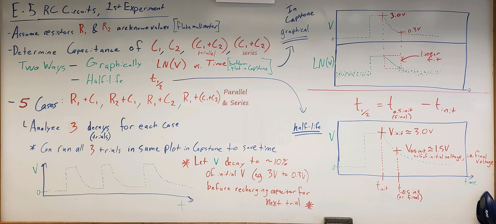
Fig. 113 Overview 1st part.#
{kind=link}
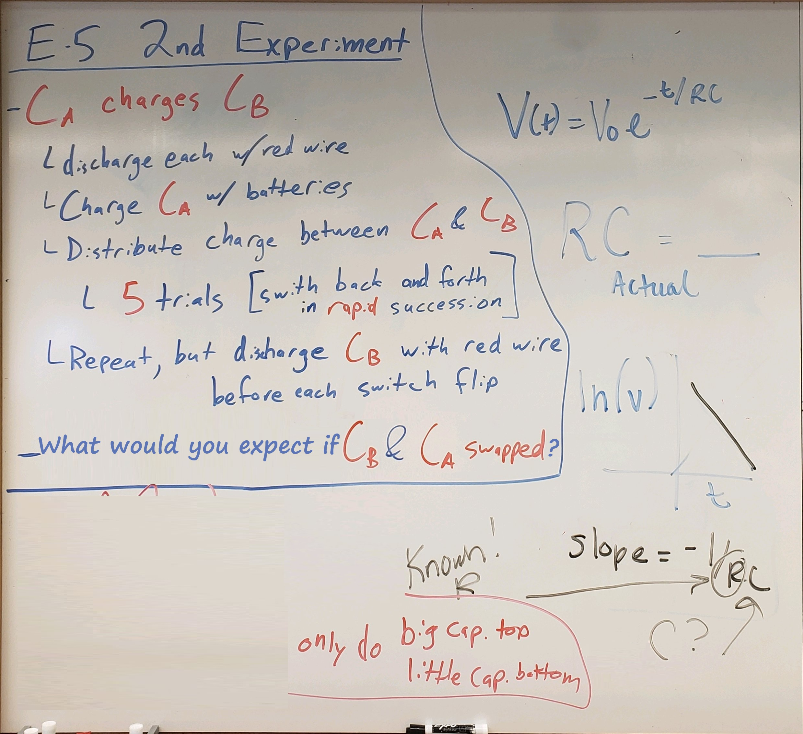
Fig. 114 Overview 2nd part.#
{kind=link}
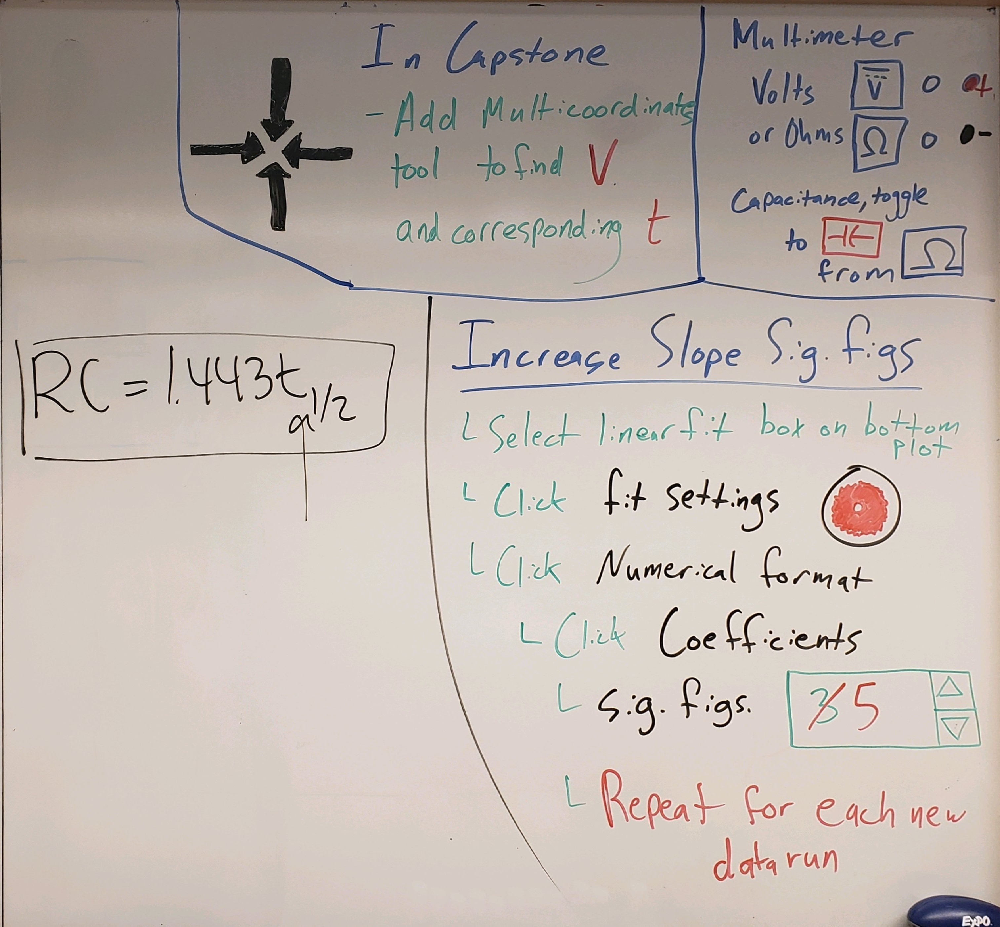
Fig. 115 Multimeter settings; Capstone significant figures notes.#